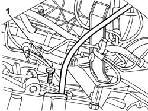
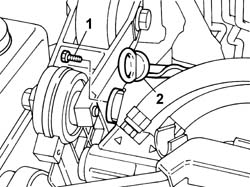
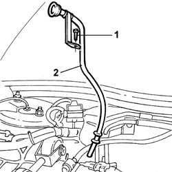
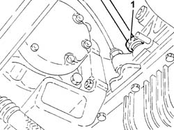
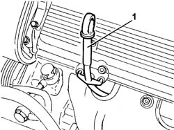

1084A16 Engine oil dip stick PIPE - R.R.
- Path
- Procedures > 10 ENGINE > 1084 ENGINE LUBRICATION > 1084A INDICATORS/CHECK DEVICES > 1084A16 Engine oil dip stick PIPE - R.R.
- Kind
- repair procedure (removal / refitting; the operation number is the code)
- Applies to
- engines: 2.0 TB, 2.4 20V, 3.0 V6, 3.2 V6; all production periods
- Interactive page
- https://sloeber94.github.io/elrnDB-lThss/en/#/75219
Applies to: engines: 2.0 TB; all production periods
 Removing
Removing
 Refitting
Refitting- Position the vehicle on a lift.
See in Op. 7055B54 PROTECTION/GUARD under engine - R.R.
1. Undo the bolt fixing the engine oil dipstick pipe to the cylinder block/crankcase.

Applies to: engines: 2.0 TB; all production periods
- Lower the lift.
See in Op. 7040D50 ENGINE COMPARTMENT UPPER SOUND INSULATION SHIELD - R.R.
1. Undo the bolt fixing the engine oil dipstick pipe mounting bracket to the air intake chamber.
2. Extract the engine oil dipstick pipe upwards.

Applies to: engines: 2.0 TB; all production periods
Refitting
Removing- Position the engine oil dipstick pipe in its housing.
- Tighten the bolt fixing the engine oil dipstick pipe to the cylinder block/crankcase.
See in Op. 7055B54 PROTECTION/GUARD under engine - R.R.
- Lower the lift.
- Tighten bolt fixing the engine oil dipstick pipe mounting bracket to the intake chamber.
See in Op. 7040D50 ENGINE COMPARTMENT UPPER SOUND INSULATION SHIELD - R.R.
- Remove the vehicle from the lift.
Applies to: engines: 2.4 20V; all production periods
Removing
Refitting- Position the vehicle on a lift.
- Open the boot, remove the cover on the left hand side and disconnect the negative battery lead.
See in Op. 7040D50 ENGINE COMPARTMENT UPPER SOUND INSULATION SHIELD - R.R.
See in Op. 7055B54 PROTECTION/GUARD under engine - R.R.
1. Undo the bolt fixing the engine oil dipstick pipe to the cylinder block/crankcase.
Applies to: engines: 2.4 20V; all production periods
- Lower the lift.
1. Undo the bolt fixing the engine oil dipstick pipe mounting bracket to the air intake chamber.
2. Extract the engine oil dipstick pipe upwards.

Applies to: engines: 2.4 20V; all production periods
Refitting
Removing- Position the engine oil dipstick pipe in its housing.
- Tighten the bolt fixing the engine oil dipstick pipe to the cylinder block/crankcase.
See in Op. 7055B54 PROTECTION/GUARD under engine - R.R.
- Lower the lift.
See in Op. 7040D50 ENGINE COMPARTMENT UPPER SOUND INSULATION SHIELD - R.R.
- Tighten bolt fixing the engine oil dipstick pipe mounting bracket to the intake chamber.
- Connect the negative battery lead.
- Remove the vehicle from the lift.
Applies to: engines: 3.0 V6, 3.2 V6; all production periods
Removing
Refitting- Position the vehicle on a lift.
See in Op. 7055B54 PROTECTION/GUARD under engine - R.R.
1. Undo the nut fixing the engine oil dipstick pipe to the cylinder block/crankcase.

Applies to: engines: 3.0 V6, 3.2 V6; all production periods
1. Remove the engine oil dipstick pipes upwards releasing it from the mounting bracket.

Applies to: engines: 3.0 V6, 3.2 V6; all production periods
Refitting
Removing- Place the engine oil dipstick pipe back in its housing and fasten it ot the mounting bracket.
- Tighten the nut fixing the engine oil dipstick pipe to the cylinder block/crankcase.
See in Op. 7055B54 PROTECTION/GUARD under engine - R.R.
- Remove the vehicle from the lift.
Topics linked from this page (2)
- 7040D50 ENGINE COMPARTMENT UPPER SOUND INSULATION SHIELD - R.R.
- 7055B54 PROTECTION/GUARD under engine - R.R.
Topics that link to this page (8)
- 1016C10 SINGLE CYLINDER HEAD - R.R. and Replace gasket
- 1020A20 CRANKCASE SUMP - R.R. clean contact surfaces and apply sealant
- 1072B10 INTAKE MANIFOLD - R.R. and Replace gasket
- 1072B48 Air CHAMBER complete with intake manifolds - R.R. and Replace gaskets
- 1072B54 HOSES CONNECTING AIR CHAMBER TO INTAKE MANIFOLD(S) - R.R.
- 1084B26 Engine oil intake DUCT - R.R.
- 1088D36 CONNECTOR ON CRANKCASE FOR CYLINDER HEAD/CRANKCASE WATER CIRCUIT HOSE WITH THERMOSTAT CLOSED - R.R.
- 1088D38 CYLINDER HEAD/CRANKCASE WATER CIRCUIT HOSE WITH THERMOSTAT CLOSED - R.R.